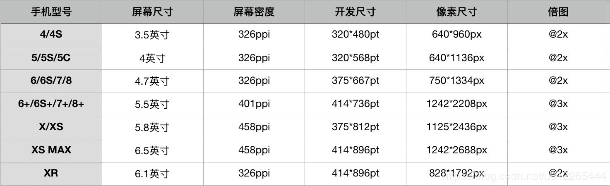
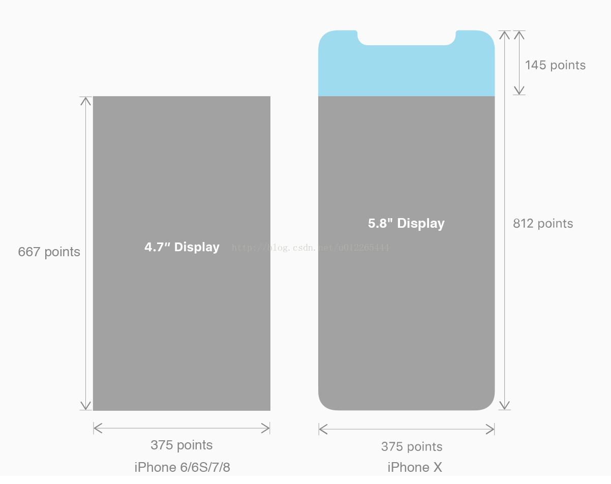
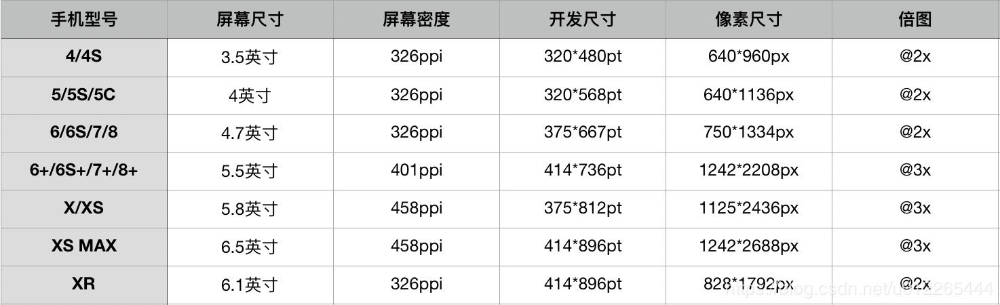
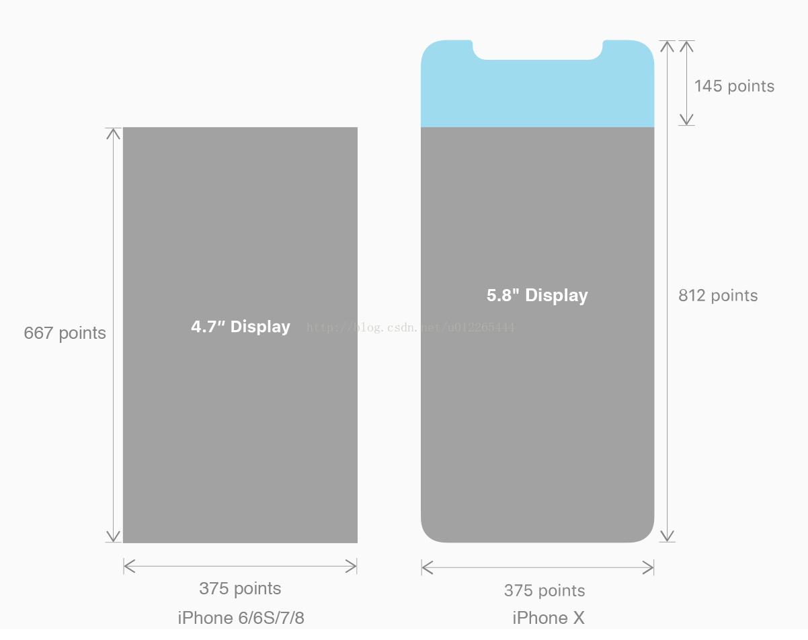
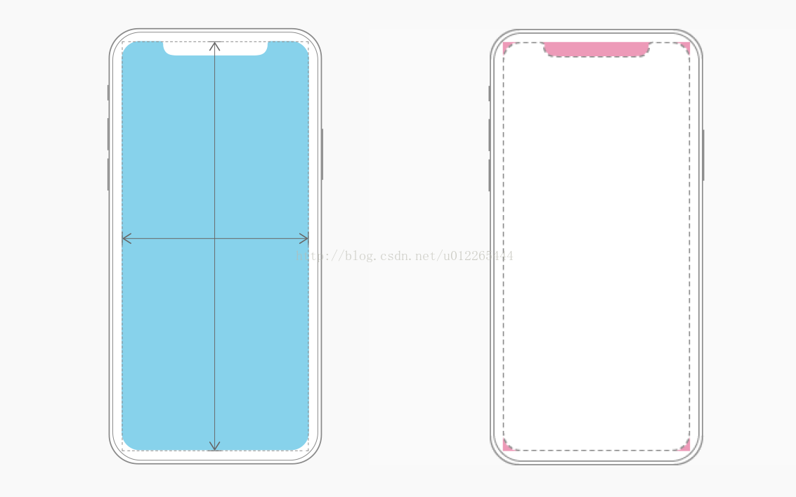

iPhone X/XS/XR/XS Max适配
常见的屏幕尺寸
 转化为像素尺寸

而本次上新的全面屏手机iPhone X无论是在屏幕尺寸、分辨率、甚至是形状上都发生了较大的改变，下面以iPhone 8作为参照物，看看到底iPhone X的适配我们要怎么考虑？

相比较而言，可以发现X和8的宽度一致都是375 pt，但是高度却多了145 pt，这就意味着首屏上可以展示更多的内容，多出了20%的垂直空间，对于京东淘宝而言这就一位置更高的商品曝光率或者是更高的运营价值。
上面谈的是开发尺寸，那设计尺寸上，iPhone 8的像素尺寸是750*1334 px（@2X），而iPhone X的像素尺寸是1125*2436 px（@3X），同样的宽度一个用@2X图，一个用@3X图，表现出了更高的清晰度。
转化为像素尺寸

而本次上新的全面屏手机iPhone X无论是在屏幕尺寸、分辨率、甚至是形状上都发生了较大的改变，下面以iPhone 8作为参照物，看看到底iPhone X的适配我们要怎么考虑？

相比较而言，可以发现X和8的宽度一致都是375 pt，但是高度却多了145 pt，这就意味着首屏上可以展示更多的内容，多出了20%的垂直空间，对于京东淘宝而言这就一位置更高的商品曝光率或者是更高的运营价值。
上面谈的是开发尺寸，那设计尺寸上，iPhone 8的像素尺寸是750*1334 px（@2X），而iPhone X的像素尺寸是1125*2436 px（@3X），同样的宽度一个用@2X图，一个用@3X图，表现出了更高的清晰度。
设计师和移动端开发工程师要考虑的布局：
1.保证你的设计布局能够填充整个屏幕；
2.注意你的核心内容不要被设备的大圆角、传感器（齐刘海）、以及独步访问主屏幕的指示灯遮挡；
iPhone X 的设计应当填充整个屏幕
注意X的大圆角和传感器

设计布局要填充整个屏幕，这里有两块区域需要额外考虑：
1、屏幕顶部，即StatusBar部分，这条状态栏本来并没有可发挥的空间，但是iphone的StatusBar与NavigationBar背景是可以通栏的，以达到一种完全沉浸式体验的设计。高度为44pt。
大部分的App应该也是没有影响的，主流NavgationBar都采用纯色背景，StatusBar背景沿用NavgationBar的背景，但是对于那些做了NavigationBar视觉效果的设计师就要考虑了，你的渐变色背景、或者带底纹的北背景、还包括电商平台商品图是通栏展示的商品图，多少会对实际效果产生一些影响。
比如，NavigationBar是渐变色背景的，由于X的Status+Nav高度增加，我们1242*192(@3X)的背景图会被等比例拉伸至这两块区域并且剪辑多余部分。如图：

2、屏幕底部
访问主屏幕的指示灯区域如图
屏幕底部的虚拟区，替代了home键，高度为34pt。
指示灯区域是一个带着系统功能的内容显示区域，这就意味着它可以展示你内容；同时如果你的底部是TabBar，那么指示灯区域背景会来自于TabBar背景的延伸；如果我们是一个feed流的页面，底部则会展示次屏feed流的局部。
鉴于圆角、传感器、指示灯区域的影响，iPhone X给出了设计布局的安全区意见：
iPhone X的安全区如下图所示
再考虑必要的NavgationBar、TabBar，主题内容显示的安全区需要根据设计需求进行考虑。根据实际需要，我们添加的所有空间都应当在安全区内，如各类型的Button、EditMenu、Pickers、Sliders等等。
所有的控件都应放置在安全区域内。
在适配过程中我们需要注意以下几点：
1、注意你的内容不要被圆角货传感器遮挡或裁切
2、注意StatusBar的高度
3、如果你的App是隐藏StatusBar的，建议重新考虑
总结 iPhone X的适配其实就是讲NavigationBar和TabBar的高度调整一下，将控件放入安全区内，总体来讲是比较简单的，希望这篇文章能够帮助到大家。
参考文章:iPhone X适配没那么复杂，但也不是看上去这么简单
附主流App对iPhone X的适配以供大家参考
1.微信 2.支付宝
3.淘宝和天猫 淘宝的TabBar做的不如天猫好
4.ofo和摩拜